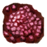
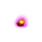

Рецепт приготовления Хохграта
Предметы / Разное
Открыть в интерактивной вики →
| Вес | 1 |
|---|---|
| Цена | 0 |
Описание
Странные руны и символы складываются в таинственную схему. Но без помощи кого-то, кто сможет это прочесть, вы не справитесь с этим. Начните с друидов.
| Рецепт, позволяющий создать питомца. Можно купить у Херемона за 500 платины, но нужно достичь 65 уровня. (Получаем его в виде одноразовой короткой миссии). | |
Питомца можно создать самостоятельно, собрав ингредиенты:
|
Рецепт
Создание: 8x  Элементарный глиф + 4x
Элементарный глиф + 4x  Ученический глиф + 150x
Ученический глиф + 150x  Средняя Фляга Здоровья + 80x
Средняя Фляга Здоровья + 80x  Средняя Фляга Знания + 80x
Средняя Фляга Знания + 80x  Средняя Фляга Ловкости + 14x
Средняя Фляга Ловкости + 14x  Антрацитовый элемент + 6x
Антрацитовый элемент + 6x  Циановый элемент + 10x
Циановый элемент + 10x
Элементарный глиф + 4x Ученический глиф + 150x Средняя Фляга Здоровья + 80x Средняя Фляга Знания + 80x Средняя Фляга Ловкости + 14x 
Амарантовый элемент + 8xАнтрацитовый элемент + 6x Циановый элемент + 10x 
Семечко мощи